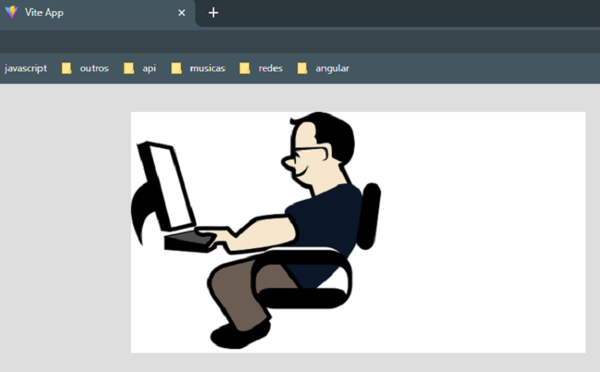
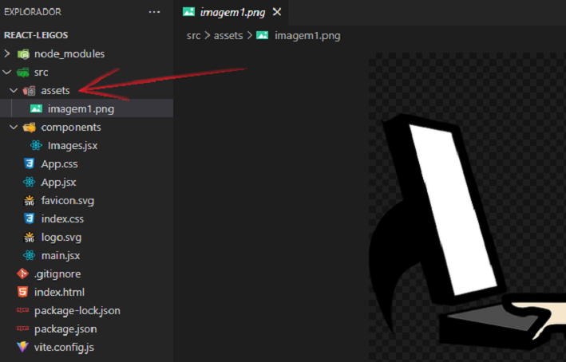
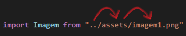
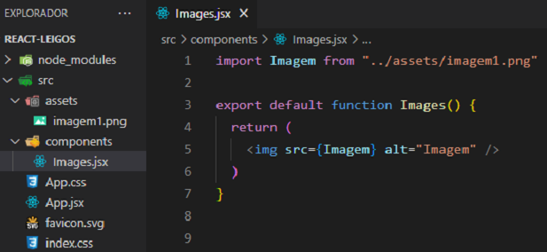
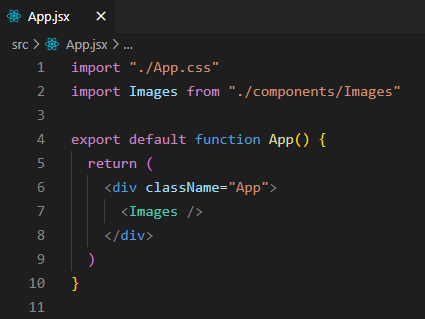

Como colocar uma imagem no arquivo App.jsx ?
Geralmente as imagens são organizadas dentro de uma pasta chamada assets. Essa pasta é criada dentro do src.

Criaremos um componente chamado Images.jsx para trabalharmos no nosso exemplo. Primeiramente dentro do nosso componente, devemos importar o arquivo. No nosso import damos um "apelido" de Imagem. Dentro das aspas fica o caminho até a imagem.
Como estamos dentro do arquivo Images.jsx, temos que fazer o caminho até a imagem que iremos usar. Os dois pontos ( .. ) significa voltar a pasta anterior, ou seja, saimos da pasta components e fomos para a pasta src. Em seguida entramos na pasta assets e por fim acessamos a imagem.


Note que na tag img o src recebe as chaves com o apelido Imagem que demos no import acima.
O arquivo Images.jsx foi importado no arquivo App.jsx e usado como uma tag html dentro do return.

E no navegador temos a seguinte aparência: